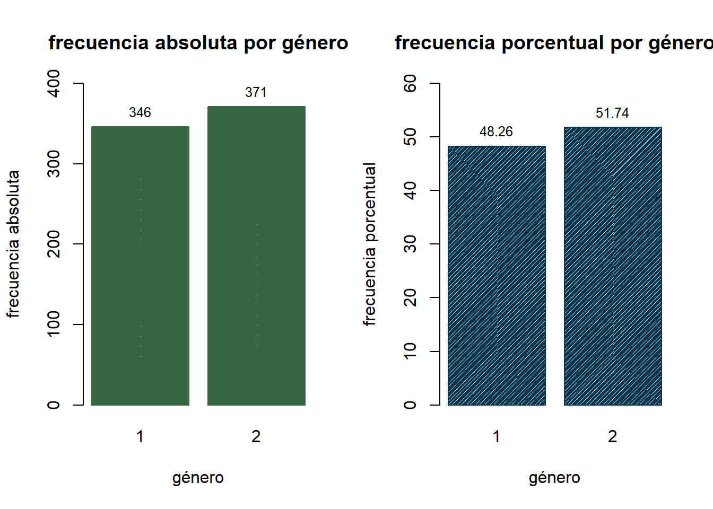
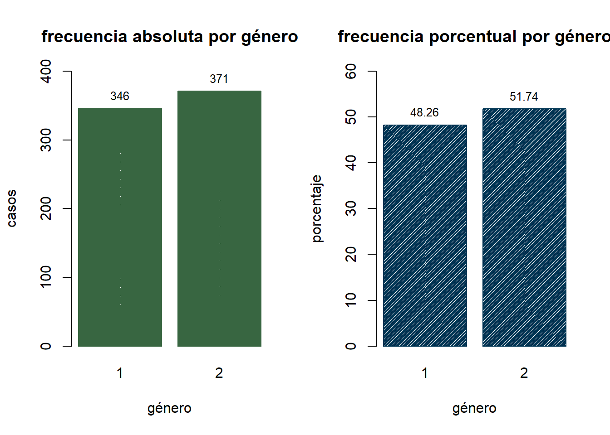
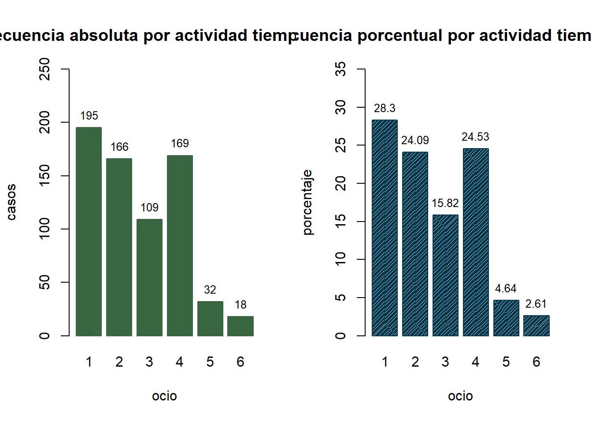

| Niveles de medición | ||
|---|---|---|
| Nivel | Definición | Ejemplo |
| Nominal | Se caracteriza por datos que consisten exclusivamente en nombres, etiquetas o categorías. Los datos no se pueden acomodar en un esquema de orden (como del más bajo al más alto). | Estado civil Color de ojos |
| Ordinal | Las categorías están ordenadas, pero no hay diferencias o estas carecen de significado. | Nivel educativo |
| De intervalo | Las diferencias tienen un significado, pero no hay punto de partida cero natural, y las razones no tienen significado. | temperaturas en grados Fahrenheit o Celsius |
| De razón | Hay un punto de partida cero natural y las razones tienen significado. | Altura Peso |
Estadística 1
1 Primera parte: Evaluación conceptual y teórica
1.1 Consigne las definiciones de Población, muestra y unidad de análisis1
Población: es un conjunto de todos los elementos que estamos estudiando, acerca de los cuales intentamos sacar conclusiones. Debemos definir esa población de modo que quede claro cuándo cierto elemento pertenece o no a la población.
Muestra: Colección de algunos elementos —no todos—, de la población bajo estudio, utilizada para describir poblaciones.
- Muestra representativa: Muestra que contiene las características importantes de la población en las mismas proporciones en que están contenidas en la población.
Unidad de Análisis: o la unidad de estudio u objeto/sujeto de estudio (los elementos que van a ser estudiados), mientras que la unidad de recolección es la fuente proveedora de la información requerida, son los elementos que funcionan como informantes
1.2 Consigne, defina y ejemplifique los niveles de medición de Stevens
1.3 Consigne las principales propiedades de la distribución normal
{X \sim N(\mu,\sigma)}

La distribución normal tiene las siguientes características clave:
Simetría: Es simétrica alrededor de la media (\mu), lo que significa que las colas izquierda y derecha de la distribución son idénticas.
Unimodal: Tiene un solo pico en la media (\mu).
Forma de Campana: La función de densidad de probabilidad forma una curva en forma de campana.
Regla Empírica: Aproximadamente el 68% de los datos caen dentro de una desviación estándar de la media, el 95% dentro de dos desviaciones estándar y el 99.7% dentro de tres desviaciones estándar.
Cuando se grafica, una distribución normal tiene la forma de “campana”. Las características de la curva en forma de campana son:
- el aumento de las frecuencias, las cuales alcanzan un punto máximo y luego disminuyen; y
- la simetría, donde la mitad izquierda de la gráfica es casi una imagen especular de la mitad derecha.
1.4 Concepto y elementos constitutivos de las pruebas de hipótesis
2 Segunda parte: Evaluación práctica
Se ha realizado una encuesta a jóvenes españoles en el año 2000. Se muestran a continuación las 16 preguntas que contenía el cuestionario.
- Para cada una de las preguntas definir:
Las variables que contienen información a analizar estadísticamente.
Identificar, para cada una de ellas el nivel de medición y las modalidades/categorías que la integran.
3 Tercera parte: Análisis estadístico descriptivo
En esta actividad se trabajará con el archivo de datos “cuestionario.xlsx”.
3.1 Importar los datos a R.
Code
cuestionario <- openxlsx::read.xlsx("EVALUACION/cuestionario.xlsx")3.2 Utilizando la función table() y sus funciones anexas, calcular
3.2.1 Las tablas de frecuencias absolutas para las variables ocio, genero, colegio, amor, religión
3.2.1.1 Ocio
Code
addmargins(table(cuestionario$ocio,useNA = "always")) %>% kbl()| Var1 | Freq |
|---|---|
| 28 | |
| 1 | 195 |
| 2 | 166 |
| 3 | 109 |
| 4 | 169 |
| 5 | 32 |
| 6 | 18 |
| NA | 0 |
| Sum | 717 |
3.2.1.2 Género
Code
addmargins(table(cuestionario$genero,useNA = "always")) %>% kbl()| Var1 | Freq |
|---|---|
| 1 | 346 |
| 2 | 371 |
| NA | 0 |
| Sum | 717 |
3.2.1.3 Colegio
Code
addmargins(table(cuestionario$colegio,useNA = "always")) %>% kbl()| Var1 | Freq |
|---|---|
| 3 | |
| 1 | 475 |
| 2 | 59 |
| 3 | 180 |
| NA | 0 |
| Sum | 717 |
3.2.1.4 Amor
Code
addmargins(table(cuestionario$amor,useNA = "always")) %>% kbl()| Var1 | Freq |
|---|---|
| 68 | |
| 1 | 294 |
| 2 | 138 |
| 3 | 149 |
| 4 | 68 |
| NA | 0 |
| Sum | 717 |
3.2.1.5 Religión
Code
addmargins(table(cuestionario$religion,useNA = "always")) %>% kbl()| Var1 | Freq |
|---|---|
| 1 | 177 |
| 2 | 317 |
| 3 | 12 |
| 4 | 108 |
| 5 | 99 |
| 99999 | 4 |
| NA | 0 |
| Sum | 717 |
3.2.2 Las tablas de frecuencias relativas para las variables ocio, genero, colegio, amor, religión
3.2.2.1 Ocio
Code
kbl(round(prop.table(table(cuestionario$ocio))*100,2))| Var1 | Freq |
|---|---|
| 3.91 | |
| 1 | 27.20 |
| 2 | 23.15 |
| 3 | 15.20 |
| 4 | 23.57 |
| 5 | 4.46 |
| 6 | 2.51 |
3.2.2.2 género
Code
kbl(round(prop.table(table(cuestionario$genero))*100,2))| Var1 | Freq |
|---|---|
| 1 | 48.26 |
| 2 | 51.74 |
3.2.2.3 colegio
Code
kbl(round(prop.table(table(cuestionario$colegio))*100,2))| Var1 | Freq |
|---|---|
| 0.42 | |
| 1 | 66.25 |
| 2 | 8.23 |
| 3 | 25.10 |
3.2.2.4 amor
Code
kbl(round(prop.table(table(cuestionario$amor))*100,2))| Var1 | Freq |
|---|---|
| 9.48 | |
| 1 | 41.00 |
| 2 | 19.25 |
| 3 | 20.78 |
| 4 | 9.48 |
3.2.2.5 religión
Code
kbl(round(prop.table(table(cuestionario$religion))*100,2))| Var1 | Freq |
|---|---|
| 1 | 24.69 |
| 2 | 44.21 |
| 3 | 1.67 |
| 4 | 15.06 |
| 5 | 13.81 |
| 99999 | 0.56 |
3.3 Realizar gráficos de barras para cada una de las variables anteriores
a. Con la frecuencia relativa
b. Con la frecuencia porcentual3.3.1 Gráfico 1: frecuencia absoluta y porcentual por variable género
Code
par(mfrow = c(1, 2))
g1 <- barplot(table(cuestionario$genero),
main="frecuencia absoluta por género",
xlab="género",
ylab="frecuencia absoluta",
border="#386641",
col="#386641",
density=100)
text(x = g1,
y = table(cuestionario$genero),
label = table(cuestionario$genero),
pos = 1,
cex = 0.8,
col = "white")
p1 <- round(prop.table(table(cuestionario$genero))*100,2)
g2 <- barplot(p1,
main="frecuencia porcentual por género",
xlab="género",
ylab="frecuencia porcentual",
border="#003554",
col="#003554",
density=80)
text(x = g2,
y = p1,
label = p1,
pos = 1,
cex = 0.8,
col = "white")
3.3.2 Gráfico 2: frecuencia absoluta y porcentual por variable ocio
Code
par(mfrow = c(1, 2))
g2 <- barplot(table(cuestionario$ocio),
main="frecuencia absoluta por ocio",
xlab="ocio",
ylab="frecuencia absoluta",
border="#386641",
col="#386641",
density=100)
text(x = g2,
y = table(cuestionario$ocio),
label = table(cuestionario$ocio),
pos = 1,
cex = 0.8,
col = "white")
p2 <- round(prop.table(table(cuestionario$ocio))*100,2)
barplot(p2,
main="frecuencia porcentual por ocio",
xlab="ocio",
ylab="frecuencia porcentual",
border="#003554",
col="#003554",
density=80)
text(x = g2,
y = p2,
label = p2,
pos = 1,
cex = 0.8,
col = "white")
3.3.3 Gráfico 3: frecuencia absoluta y porcentual por variable amor
Code
par(mfrow = c(1, 2))
g3 <- barplot(table(cuestionario$amor),
main="frecuencia absoluta por amor",
xlab="amor",
ylab="frecuencia absoluta",
border="#386641",
col="#386641",
density=100)
text(x = g3,
y = table(cuestionario$amor),
label = table(cuestionario$amor),
pos = 1,
cex = 0.8,
col = "white")
p3 <- round(prop.table(table(cuestionario$amor))*100,2)
barplot(p3,
main="frecuencia porcentual por amor",
xlab="amor",
ylab="frecuencia porcentual",
border="#003554",
col="#003554",
density=80)
text(x = g3,
y = p3,
label = p3,
pos = 1,
cex = 0.8,
col = "white")
3.3.4 Gráfico 4: frecuencia absoluta y porcentual por variable colegio
Code
par(mfrow = c(1, 2))
g4 <- barplot(table(cuestionario$colegio),
main="frecuencia absoluta por colegio",
xlab="colegio",
ylab="frecuencia absoluta",
border="#386641",
col="#386641",
density=100)
text(x = g4,
y = table(cuestionario$colegio),
label = table(cuestionario$colegio),
pos = 1,
cex = 0.8,
col = "white")
p4 <- round(prop.table(table(cuestionario$colegio))*100,2)
barplot(p4,
main="frecuencia porcentual por colegio",
xlab="colegio",
ylab="frecuencia porcentual",
border="#003554",
col="#003554",
density=80)
text(x = g4,
y = p4,
label = p4,
pos = 1,
cex = 0.8,
col = "white")
3.3.5 Gráfico 5: frecuencia absoluta y porcentual por variable religión
Code
par(mfrow = c(1, 2))
g5 <- barplot(table(cuestionario$religion),
main="frecuencia absoluta por religion",
xlab="religion",
ylab="frecuencia absoluta",
border="#386641",
col="#386641",
density=100)
text(x = g5,
y = table(cuestionario$religion),
label = table(cuestionario$religion),
pos = 1,
cex = 0.8,
col = "white")
p5 <- round(prop.table(table(cuestionario$religion))*100,2)
barplot(prop.table(table(cuestionario$religion))*100,
main="frecuencia porcentual por religion",
xlab="religion",
ylab="frecuencia porcentual",
border="#003554",
col="#003554",
density=80)
text(x = g5,
y = p5,
label = p5,
pos = 1,
cex = 0.8,
col = "white")
3.4 Calcular las tablas de contingencia para los siguientes cruces de variables
3.4.1 Ocio y genero
Code
# absoluta
addmargins(table(cuestionario$ocio, cuestionario$genero,useNA = "always")) %>% kbl()
# relativa
kbl(round(prop.table(table(cuestionario$ocio, cuestionario$genero))*100,2))| 1 | 2 | NA | Sum | |
|---|---|---|---|---|
| 13 | 15 | 0 | 28 | |
| 1 | 84 | 111 | 0 | 195 |
| 2 | 130 | 36 | 0 | 166 |
| 3 | 38 | 71 | 0 | 109 |
| 4 | 52 | 117 | 0 | 169 |
| 5 | 23 | 9 | 0 | 32 |
| 6 | 6 | 12 | 0 | 18 |
| NA | 0 | 0 | 0 | 0 |
| Sum | 346 | 371 | 0 | 717 |
| 1 | 2 | |
|---|---|---|
| 1.81 | 2.09 | |
| 1 | 11.72 | 15.48 |
| 2 | 18.13 | 5.02 |
| 3 | 5.30 | 9.90 |
| 4 | 7.25 | 16.32 |
| 5 | 3.21 | 1.26 |
| 6 | 0.84 | 1.67 |
3.4.2 Ocio y colegio
Code
# absoluta
addmargins(table(cuestionario$ocio, cuestionario$colegio,useNA = "always")) %>% kbl()
# relativa
kbl(round(prop.table(table(cuestionario$ocio, cuestionario$colegio))*100,2))| 1 | 2 | 3 | NA | Sum | ||
|---|---|---|---|---|---|---|
| 0 | 18 | 2 | 8 | 0 | 28 | |
| 1 | 1 | 135 | 11 | 48 | 0 | 195 |
| 2 | 1 | 112 | 19 | 34 | 0 | 166 |
| 3 | 0 | 70 | 12 | 27 | 0 | 109 |
| 4 | 1 | 106 | 13 | 49 | 0 | 169 |
| 5 | 0 | 23 | 1 | 8 | 0 | 32 |
| 6 | 0 | 11 | 1 | 6 | 0 | 18 |
| NA | 0 | 0 | 0 | 0 | 0 | 0 |
| Sum | 3 | 475 | 59 | 180 | 0 | 717 |
| 1 | 2 | 3 | ||
|---|---|---|---|---|
| 0.00 | 2.51 | 0.28 | 1.12 | |
| 1 | 0.14 | 18.83 | 1.53 | 6.69 |
| 2 | 0.14 | 15.62 | 2.65 | 4.74 |
| 3 | 0.00 | 9.76 | 1.67 | 3.77 |
| 4 | 0.14 | 14.78 | 1.81 | 6.83 |
| 5 | 0.00 | 3.21 | 0.14 | 1.12 |
| 6 | 0.00 | 1.53 | 0.14 | 0.84 |
3.4.3 Amor y religión
Code
# absoluta
addmargins(table(cuestionario$amor, cuestionario$religion,useNA = "always")) %>% kbl()| 1 | 2 | 3 | 4 | 5 | 99999 | NA | Sum | |
|---|---|---|---|---|---|---|---|---|
| 14 | 17 | 3 | 16 | 16 | 2 | 0 | 68 | |
| 1 | 70 | 149 | 2 | 40 | 32 | 1 | 0 | 294 |
| 2 | 32 | 64 | 3 | 17 | 21 | 1 | 0 | 138 |
| 3 | 40 | 63 | 3 | 22 | 21 | 0 | 0 | 149 |
| 4 | 21 | 24 | 1 | 13 | 9 | 0 | 0 | 68 |
| NA | 0 | 0 | 0 | 0 | 0 | 0 | 0 | 0 |
| Sum | 177 | 317 | 12 | 108 | 99 | 4 | 0 | 717 |
Code
# relativa
kbl(round(prop.table(table(cuestionario$amor, cuestionario$religion))*100,2))| 1 | 2 | 3 | 4 | 5 | 99999 | |
|---|---|---|---|---|---|---|
| 1.95 | 2.37 | 0.42 | 2.23 | 2.23 | 0.28 | |
| 1 | 9.76 | 20.78 | 0.28 | 5.58 | 4.46 | 0.14 |
| 2 | 4.46 | 8.93 | 0.42 | 2.37 | 2.93 | 0.14 |
| 3 | 5.58 | 8.79 | 0.42 | 3.07 | 2.93 | 0.00 |
| 4 | 2.93 | 3.35 | 0.14 | 1.81 | 1.26 | 0.00 |
3.4.4 Colegio y religión
Code
# absoluta
addmargins(table(cuestionario$colegio, cuestionario$religion,useNA = "always")) %>% kbl()| 1 | 2 | 3 | 4 | 5 | 99999 | NA | Sum | |
|---|---|---|---|---|---|---|---|---|
| 1 | 2 | 0 | 0 | 0 | 0 | 0 | 3 | |
| 1 | 114 | 225 | 7 | 64 | 62 | 3 | 0 | 475 |
| 2 | 13 | 15 | 3 | 18 | 10 | 0 | 0 | 59 |
| 3 | 49 | 75 | 2 | 26 | 27 | 1 | 0 | 180 |
| NA | 0 | 0 | 0 | 0 | 0 | 0 | 0 | 0 |
| Sum | 177 | 317 | 12 | 108 | 99 | 4 | 0 | 717 |
Code
# relativa
kbl(round(prop.table(table(cuestionario$colegio, cuestionario$religion))*100,2))| 1 | 2 | 3 | 4 | 5 | 99999 | |
|---|---|---|---|---|---|---|
| 0.14 | 0.28 | 0.00 | 0.00 | 0.00 | 0.00 | |
| 1 | 15.90 | 31.38 | 0.98 | 8.93 | 8.65 | 0.42 |
| 2 | 1.81 | 2.09 | 0.42 | 2.51 | 1.39 | 0.00 |
| 3 | 6.83 | 10.46 | 0.28 | 3.63 | 3.77 | 0.14 |
4 Cuarta parte: Contrastes de hipótesis
Utilizando los datos del archivo cuestionario y técnicas paramétricss y no paramétricas,
Determinar con un nivel de significación del 5% si el promedio de horas libres a la semana para ocio o diversión en los hombres es mayor a la de las mujeres. Concluir en términos del problema
Determinar si hay diferencias en la cantidad promedio de libros leídos si tenemos en cuenta la asistencia de los jóvenes a colegio estatal o privado. Utilizar un nivel de significación del 5%. Concluir en términos del problema
Determinar en cada caso, cuál es el test más adecuado. Justificar.
Footnotes
https://drive.google.com/file/d/1WLEdjR0WAI9UFv178iBQv4nhLVa8V_DX/view↩︎